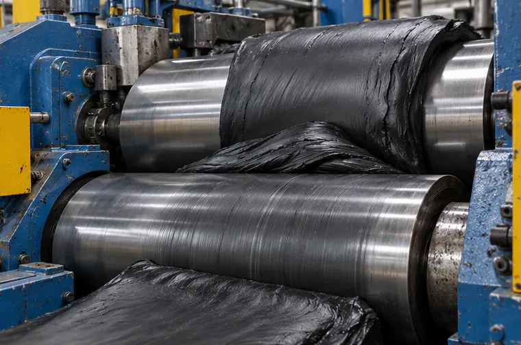
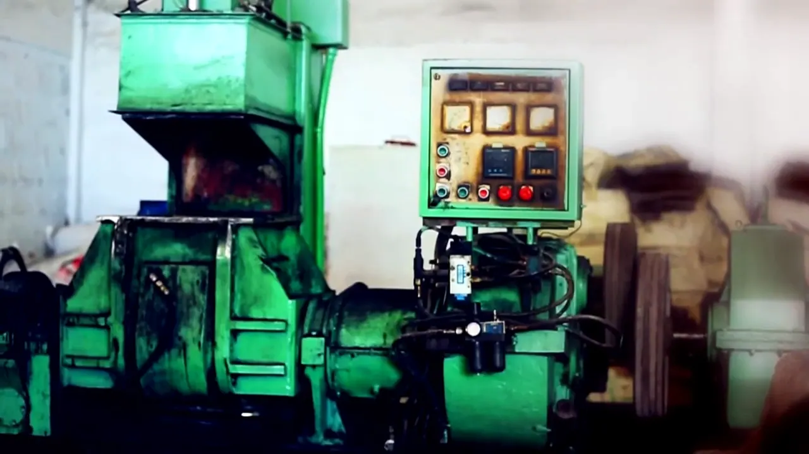
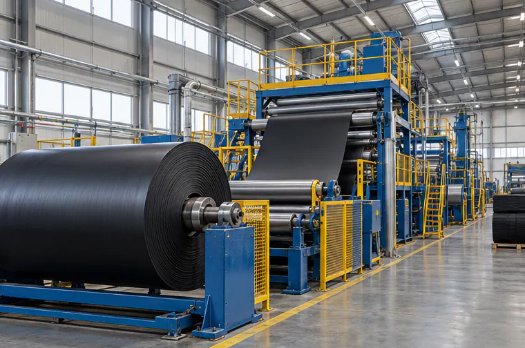
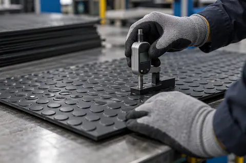

Two-Roll Mixing Mill
Blends raw rubber with fillers and chemicals into an even compound.
Purpose: Compounding & mixing

Divine Rubber Products manufactures rubber, coir and jute floor mats at Eara, Neelamperoor in Alleppey District — about an hour from Kottayam, India's rubber town, and from Alleppey, its coir town.
RSS-4 rubber, hand-searched high-quality micro crumb and other internationally branded chemicals are the raw materials for our mats. Combined with up-to-date technology, they produce mats that are durable, flexible, washable, weatherproof and anti-fatigue — at a reasonable price.

Every Divine mat follows a controlled sequence of steps, with checks built in along the way.
RSS-4 rubber, hand-searched micro crumb and internationally branded chemicals.
Rubber and additives are blended into a uniform compound on mixing mills.
The compound is moulded into the mat pattern and cured.
Edges are trimmed and each mat is finished to size.
Finished mats are checked against the order specification.
Mats are packed for domestic delivery or export via Cochin port.
Our production floor combines proven rubber-processing machinery with the hands-on experience of our team.

Blends raw rubber with fillers and chemicals into an even compound.
Purpose: Compounding & mixing

Presses the compound into smooth sheets of a set thickness, ready for moulding.
Purpose: Sheeting & calendering

Winds finished matting into rolls while the team checks the surface pattern.
Purpose: Rolling & surface checks

Mats are trimmed, measured and inspected as they move along the line.
Purpose: Trimming & final checks
Divine Rubber is committed to a high level of customer satisfaction, and in particular to quality levels that meet or exceed the expectations of our customers.
We achieve this through continuous improvement and teamwork — checking materials before production, monitoring each stage on the floor, and approving every order before it leaves the factory.
Rubber, crumb and chemicals are checked for grade and consistency before use.
Compound, moulding and curing are monitored during production.
Finished mats are checked for size, thickness, pattern and finish.
Orders are approved against the customer specification before packing.
Testing and inspection confirm that each mat meets its specification before dispatch.
[Describe the tests carried out on sample mats from each batch, and how often.]
[Describe visual checks, dimensional measurement and any in-line inspections.]
Parameters commonly checked for rubber matting include:
[Confirm which of these Divine Rubber tests, and add any others.]
[List testing equipment and add photos of the testing area.]


Independent memberships and audits that support our commitment to quality and responsible manufacturing.
Divine Rubber is a member of the All India Rubber Industries Association (AIRIA), the national body for India's rubber industry.
Factory audited by Bureau Veritas, an independent testing, inspection and certification company.
Registered on Sedex, a platform for sharing responsible-sourcing and ethical-trade audit data with buyers.
Talk to us about your specification — we'll recommend the right mat and share the details you need for your project.